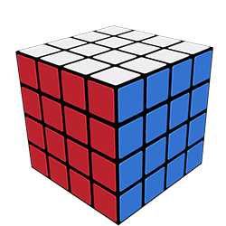

Cubo 2x2
O cubo 2x2, também conhecido como minicubo ou cubo de bolso, é um quebra-cabeça com 8 peças que equivale a um cubo mágico, mas com apenas 2 camadas em cada dimensão.
Cubo 3x3

O cubo mágico 3x3 é um quebra-cabeça tridimensional com 6 faces, cada uma dividida em 9 quadrados. É a versão mais popular do cubo mágico, também conhecido como Cubo de Rubik.
Cubo 4x4
O cubo 4x4 é um brinquedo com 48 peças, que pode ser usado para desafiar a mente e exercitar a memória.
Cubo Mirror

O cubo mirror, também conhecido como Mirror Blocks ou Bump Cube, é um quebra-cabeça similar ao cubo de Rubik 3x3x3. A principal diferença é que as peças do cubo mirror são todas da mesma cor e têm tamanhos diferentes.
Cubo Pyraminx
O cubo Pyraminx é um quebra-cabeça em formato de tetraedro regular, semelhante ao Cubo de Rubik. Ele foi criado por Uwe Mèffert e introduzido no mercado em 1981 pela Tomy Brinquedos.
Cubo Espiral
O cubo Espiral é um quebra-cabeça em forma de espiral que pode ser torcido e girado para formar diversas figuras.